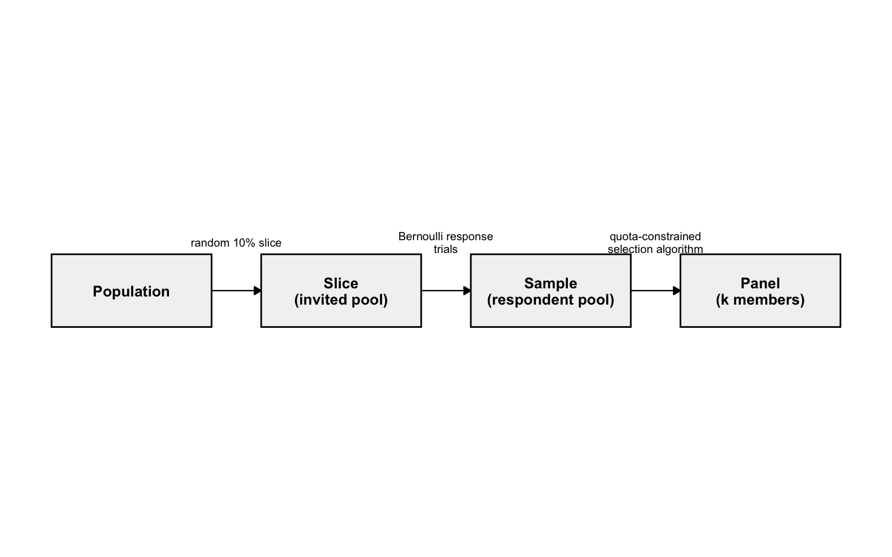
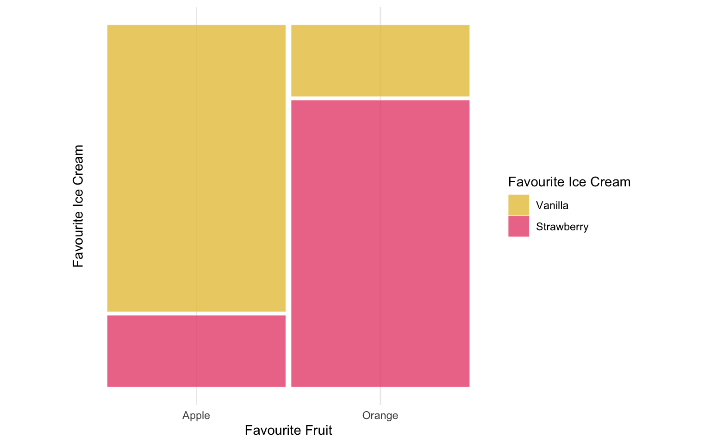

3 Methodology
3.1 Research aims
This thesis set out to assess whether current algorithmic methods achieve representative panels, diagnose whether a sample’s association trends survive the sortition process, demystify sortition selection to improve its transparency, and provide a framework for more informed, standardised practitioner decisions.
Underlying these aims is a more basic question: what does it mean for a panel to be “good” at representation, and are current methods actually achieving it? That breaks down further. Are algorithms like LexiMin performing as well as they could? How well do intersectional associations and trends survive selection, and therefore how representative is panel composition? And how much can differing survey response rates and other sampling-level issues bias representativeness, beyond whatever the algorithm itself contributes?
3.2 Research design
Simulation design
To test these questions, two populations of simple intersectional complexity (two variables) with varying associations (independent and associated) were simulated. The findings should generalise to cases with more categories, and are expected to be more severe there, since the intersectional matrix only grows in dimension while panel size stays fixed. The categories used – age (18-34, 35-44, 45-54, 55-64, 65+) and tenure status (rent, own, other) – were chosen to mirror demographic variables commonly used for sortition in practice. Combining these two variables produced the four simulated sample/respondent datasets used for panel selection.
Population, slice, sample and panel: procedure and definitions
Every simulated dataset in this thesis moves through the same four stages, with terms kept deliberately consistent throughout to avoid ambiguity – “sample” in particular is used loosely, and inconsistently, across much of the sortition literature.
- Population: the full simulated universe of individuals (n_{\text{total}} = 100{,}000), generated from a specified joint probability array over the category variables. This represents the entire community eligible for selection, with marginal and joint (intersectional) distributions known exactly, since they were specified directly in the data-generating process.
- Slice: a simple random sample, without replacement, of 10% of the population, drawn before any response behaviour is simulated – representing the group actually invited to take part (e.g. mailed a survey), sometimes called the invited pool elsewhere. Because it is drawn uniformly at random, the slice’s composition deviates from the population’s only through ordinary sampling variability, not systematic bias.
- Sample: the subset of the slice who actually respond, determined by an independent Bernoulli trial for each invited individual under one of the response-rate cases described below. This is the realised pool available for panel selection – also called the respondent pool or survey sample elsewhere – and the benchmark every panel’s representativeness is compared against, since it, not the full population, is what any practical algorithm actually draws from.
- Panel: a fixed-size subset of k members drawn from the sample by a selection algorithm (LexiMin, via Panelot, in current practice) subject to quota constraints on each category level’s permitted count – the final body that would convene to deliberate, and the unit whose representativeness this thesis is ultimately concerned with.
Figure 3.1 summarises this pipeline. Each stage can introduce its own departure from the population’s true composition: the slice through ordinary sampling variability, the sample through differential response rates, and the panel through the selection algorithm’s own quota mechanism (Section 3.2.5). Distinguishing these stages explicitly makes it possible to attribute any observed distortion in a final panel to a specific stage of the pipeline, rather than to sortition “in general”.
Population construction: age and tenure
To illustrate the general procedure concretely at a minimal scale, this thesis builds a simple two-variable example using only age and tenure. Age is denoted A, taking one of L_A = 5 ordered levels a \in \{1, \dots, 5\} (18-34 through 65+), and tenure is denoted T, taking one of L_T = 3 levels t \in \{1, \dots, 3\} (Rent, Own, Other). Marginal probability vectors were defined for each variable,
\mathbf{p}_A = \left(p_{A_1}, \dots, p_{A_5}\right), \qquad \mathbf{p}_T = \left(p_{T_1}, p_{T_2}, p_{T_3}\right), \qquad \sum_{a=1}^{5} p_{A_a} = 1, \qquad \sum_{t=1}^{3} p_{T_t} = 1, \tag{3.1}
with \mathbf p_A = (0.15, 0.20, 0.25, 0.25, 0.15), a mild skew toward the upper-middle age brackets, and \mathbf p_T = (0.30, 0.50, 0.20), a moderate skew toward home ownership. Both the independent and associated populations below use these same marginal targets, so any difference between them is attributable solely to the association introduced, not to a difference in either variable’s marginal distribution.
An independent population (sim_data2) was generated by taking the outer product of these two marginals to form a joint probability array,
P^{(0)}(a, t) \;=\; p_{A_a} \, p_{T_t}, \qquad \mathbf{P}^{(0)} \;=\; \mathbf{p}_A \mathbf{p}_T^\top \;\in\; \mathbb{R}^{5 \times 3}, \tag{3.2}
a 5 \times 3 matrix whose row sums equal \mathbf p_A and column sums equal \mathbf p_T by construction, so that A \perp T. This array was flattened into a probability vector and cell counts were drawn from a single multinomial trial before being expanded into individual-level records, as described in full below.
A second, associated population (sim_data2_cov) uses the same marginal targets but deliberately introduces a negative association between age and renting, via an ordinal score for age,
s(a) = \frac{a - 1}{5 - 1} \in [0, 1], \tag{3.3}
running from 0 for the youngest bracket to 1 for the oldest, which was used to seed the independent array \mathbf P^{(0)} with an exponential adjustment factor targeting only the “Rent” level of tenure,
\tilde{P}(a, t) \;=\; P^{(0)}(a, t) \cdot \exp\!\Big(-\alpha \, s(a) \cdot \mathbb{1}[t = \text{Rent}]\Big), \qquad \alpha = 1.2, \tag{3.4}
scaling down the probability of renting by a factor of e^{-\alpha s(a)} that grows with age, while leaving owning and other tenure unchanged. Because this adjustment only touches the “Rent” column, the row and column sums of \tilde{\mathbf P} no longer equal \mathbf p_A and \mathbf p_T, so the array was rescaled through iterative proportional fitting (raking) to restore the age and tenure marginals exactly to their specified targets. Repeating this two-pass rescaling for R = 100 iterations (well past convergence for a 5 \times 3 table; full update rule in Appendix A) yields a raked array P^\star satisfying \sum_{t} P^\star(a, t) = p_{A_a} for all a and \sum_{a} P^\star(a, t) = p_{T_t} for all t, to numerical tolerance, while retaining the negative age-renting association introduced by the exponential seeding step – raking restores the specified marginals while preserving the association the adjustment introduced.
Both populations were sampled the same way, differing only in which array was used. The relevant array (\mathbf P^{(0)} for the independent case, or the raked P^\star for the associated case) was flattened into a probability vector \mathbf p^\star \in \mathbb R^{15} (age varying fastest), and cell counts were drawn from a single multinomial trial,
(n_1, \dots, n_{15}) \sim \text{Multinomial}\!\left(n_{\text{total}}, \, \mathbf p^\star\right), \qquad n_{\text{total}} = 100{,}000, \tag{3.5}
with each cell j, corresponding to one (a, t) combination, expanded into n_j individual-level records sharing that age and tenure. Comparing the two resulting populations demonstrates the core logic of the simulation framework in its simplest form: a chi-squared test of association between age and tenure is non-significant in the independent population but highly significant in the associated population, with the conditional probability of renting falling steadily from around 44% among 18-34 year olds to around 18% among those aged 65 and over, even though both populations share identical marginal distributions for age and tenure individually. This confirms the seeding-and-raking procedure successfully introduces a targeted association without disturbing the overall marginal proportions, and sets up a direct test of whether the selection algorithm preserves intersection structure beyond the purely marginal level.
Slice and sample construction: response simulation
As is standard practice, a random slice of the population (10%) is taken to serve as the survey sample, from which responses are drawn. Concretely, from a population of n_{\text{total}} individuals, a survey sample \mathcal{S} of size n_{\mathcal S} = \lfloor 0.10 \, n_{\text{total}} \rceil (so n_{\mathcal S} = 10{,}000 for the two-variable example, drawn uniformly at random without replacement) is taken as the invited pool, before any response behaviour is simulated. Whether each invited individual i \in \mathcal S actually responds is then modelled by a binary response variable R, with R_i = 1 if individual i responds and R_i = 0 otherwise, drawn as an independent Bernoulli trial,
R_i \;\overset{\text{ind.}}{\sim}\; \text{Bernoulli}(\pi_i), \tag{3.6}
where the response probability \pi_i is assigned according to one of two cases: an independent case, and an age-covaried case mirroring the age-renting association introduced at the population level above.
In the independent case, every invited individual is equally likely to respond regardless of their trait profile,
\pi_i = \pi_0, \qquad \pi_0 = 0.30, \tag{3.7}
a baseline against which the effects of differential response can be compared; a chi-squared test confirms no significant association between A and R here, as expected. In the age-covaried case, response likelihood increases with age, reusing the same ordinal score s(a) defined above,
\pi_i = \pi_1 \exp\!\big(\alpha_R \, s(a_i)\big), \qquad \pi_1 = 0.20, \quad \alpha_R = 1.0, \tag{3.8}
so that the response rate rises from around 20% among the youngest bracket to over 50% among the oldest, and the association between A and R is now highly significant.
Applying both response cases to both populations produces four respondent-pool files – sim_data2_ind_eq.csv, sim_data2_ind_ass.csv, sim_data2_cov_eq.csv and sim_data2_cov_ass.csv – each containing only the individuals who actually responded under that population/response-case combination, with their age and tenure. These names follow the same <ind|cov>_<eq|ass> convention used for the lottery files below, so a file name alone identifies both the population and response case it came from. Each respondent pool is, in the terminology above, a sample: the realised pool a panel can actually be drawn from, and the input to the panel-selection step described next.
Panel generation and evaluation
Panel generation and representation
With the four respondent-pool files constructed above, the final stage of the pipeline draws an actual panel from each respondent pool. This was done using Panelot, a sortition tool that selects panels of a fixed size k (here k = 50) subject to quota constraints on each variable’s margin independently – a minimum and maximum permitted count for every age bracket and tenure category, based on the population’s marginal distributions and specified in a categories.csv file. For brackets whose exact proportional target at k = 50 was non-integer – 18-34, 45-54, 55-64 and 65+, each targeting 7.5 or 12.5 members – the quota range was set to the floor and ceiling of that target (e.g. 7-8 for a 7.5 target). The remaining categories – 35-44 and all three tenure levels – land on exact integer targets and so carry a fixed quota with no slack. Rather than a single fixed panel, Panelot’s output, lottery.csv, enumerates every feasible panel its selection algorithm discovered, together with the exact probability q_j panel j would be returned were the lottery run, so \sum_j q_j = 1 across the J discovered panels. Each row lists the pool identifiers of the k = 50 selected respondents.
A deliberate feature of this quota structure is that it constrains the age and tenure margins of a panel separately, with no quota placed on their joint (intersectional) distribution. Two panels can therefore satisfy identical quotas – the same count of 18-34 year olds, the same count of renters – while differing substantially in which individuals combine which age with which tenure. This asymmetry between marginal and joint representativeness motivates the association-level evaluation developed below.
Four lottery files were generated in this way, covering every combination of the two populations (independent and associated) and the two response-rate cases (equal-chance and age-associated) introduced previously: lottery_ind_eq.csv, lottery_ind_ass.csv, lottery_cov_eq.csv and lottery_cov_ass.csv. Each panel’s members are identified only by pool identifier in lottery.csv, so their age and tenure values were recovered by joining back onto the respondent-pool CSV originally supplied to Panelot (e.g. sim_data2_cov_eq.csv). This respondent pool – the people who were invited to respond and actually did so – is referred to throughout as the survey sample, and serves as the benchmark against which every panel’s composition is compared.
Panel-versus-sample homogeneity test
For each discovered panel j, a 5 \times 3 contingency table of age against tenure was constructed from its k = 50 members, and a chi-squared test of independence applied to assess whether age and tenure appear related within that panel alone. With only 50 observations spread across 15 cells, several expected cell counts fall below the conventional rule-of-thumb minimum of five, so a Monte Carlo approximation to the null distribution (simulate.p.value = TRUE, B = 2000 resamples) replaced the standard asymptotic chi-squared reference distribution.
This within-panel test alone cannot establish whether a panel’s association differs from the survey sample’s – a panel could show a significant association purely because the sample itself does. To test this directly, each panel j was compared against the remainder of the survey sample via a three-way log-linear model. Writing G for a binary group indicator (panel member vs. not), a Poisson model was fitted to the cell counts of the 5 \times 3 \times 2 Age \times Tenure \times G table, first without the three-way interaction,
\log \mathbb{E}[\text{Freq}] = \beta_0 + \beta_A^{(a)} + \beta_T^{(t)} + \beta_G^{(g)} + \beta_{AT}^{(a,t)} + \beta_{AG}^{(a,g)} + \beta_{TG}^{(t,g)}, \tag{3.9}
and then with it,
\log \mathbb{E}[\text{Freq}] = \beta_0 + \beta_A^{(a)} + \beta_T^{(t)} + \beta_G^{(g)} + \beta_{AT}^{(a,t)} + \beta_{AG}^{(a,g)} + \beta_{TG}^{(t,g)} + \beta_{ATG}^{(a,t,g)}. \tag{3.10}
A likelihood-ratio test between these two nested models isolates the three-way interaction term \beta_{ATG}, with the test statistic G^2 = 2(\ell_{\text{full}} - \ell_{\text{reduced}}) referred to a \chi^2_8 distribution – 8 degrees of freedom corresponding to the (5-1)(3-1)(2-1) free parameters contributed by \beta_{ATG}^{(a,t,g)} across the 5 \times 3 \times 2 table. Rather than testing whether the fitted \hat\beta_{ATG} is itself close to zero, the test asks whether allowing the age-tenure association to differ between panel and non-panel members improves the model’s fit by more than chance alone would produce. A significant result indicates that the age-tenure association differs between panel members and the rest of the sample, i.e. that panel j’s intersectional composition is not merely a smaller, noisier version of the sample’s, but systematically different from it.
Because every panel discovered for a given lottery file is tested this way – several thousand panels per file – the homogeneity test was repeated many times over. Results are reported at an uncorrected threshold of \alpha = 0.05 throughout.
A panel of only 50 members is itself a small sample, so some disagreement with the full survey sample’s association is expected from sampling variability alone, independent of anything specific to Panelot’s mechanism. To separate a genuine quota-constrained-selection effect from this baseline noise, the same homogeneity test was applied to 500 simple random samples of size 50, drawn without quota constraints from the same survey sample. If panels were no more divergent from the sample than equivalently sized random draws, the proportion flagged as significantly different should resemble the proportion of random samples flagged – approximately \alpha under the null.
Alongside each test, Cramer’s V,
V = \sqrt{\frac{\chi^2 / n}{\min(r - 1, \, c - 1)}}, \tag{3.11}
was computed from the within-panel contingency table, with r = 5 age brackets as rows and c = 3 tenure categories as columns (an arbitrary orientation choice, since \min(r-1, c-1) is unaffected by swapping which variable is assigned to rows versus columns), to express the strength, rather than merely the statistical significance, of the association detected within each panel.
Validating the simulation: numerical summary
Alongside the mosaic plots used throughout this thesis to compare the age x tenure population, slice and respondent sample visually (Chapter 2; visualisation methods are discussed further below), each simulated dataset is also checked numerically, to confirm the data-generating process behaved as intended before any downstream panel evaluation. Two quantities recur throughout this checking, the same chi-squared logic underlying the panel-level homogeneity test described above (Section 3.2.5):
- A chi-squared test of independence, applied to the 5 \times 3 age-by-tenure contingency table, confirms whether the intended association (or lack of it) was actually realised in a given dataset. A non-significant result (p > 0.05) for the independent population (
sim_data2), alongside a significant result for the associated population (sim_data2_cov), is the expected pattern – a sanity check on the simulation code, not a substantive finding in its own right. - Marginal proportion tables (
prop.table()applied to the age and tenure frequency tables) confirm that each variable’s marginal distribution matches its specified target (\mathbf p_A or \mathbf p_T) to within sampling error, at both the population and sample level. This matters particularly for the associated population, where raking is specifically designed to restore exact marginal targets despite the association-inducing adjustment applied beforehand.
Visualisation methods
The choice of visualisation follows from the nature of the data. The variables of interest – age brackets, tenure status, and other demographic categories used for sortition – are categorical rather than continuous, and the central question is how they intersect, not how any one is distributed alone. Scatterplots and histograms are built for continuous data; a bar or pie chart shows one categorical variable’s marginal distribution but not how two or more co-occur (Section 4.1); and a bar chart grouped by a second variable becomes hard to read once cell counts are uneven – precisely this thesis’s situation – because bar heights are not comparable the way proportional tile areas are. The mosaic plot, by contrast, represents both marginal and joint distributions within a single figure (Chapter 2), which is why it is the primary visualisation tool used throughout this thesis: it shows not just whether individual categories are represented in the right proportions, but whether particular combinations are over- or under-represented relative to population demographics. Mosaic plots were constructed using the ggmosaic2 package (Friendly et al. 2026), built within the ggplot2 grammar of graphics.
To make later plots easy to interpret, the simplest form of a mosaic plot is shown in Figure 3.2 below.

This example uses two variables, favourite fruit and favourite ice cream, with 25 individuals per fruit (50 total) and ice cream deliberately associated with fruit – 80% of Apple-lovers prefer Vanilla, 80% of Orange-lovers prefer Strawberry. Bar width reflects each category’s marginal share (equal here); fill height reflects the conditional proportion of ice cream given fruit. The association appears in the fill split, which reverses almost entirely between bars, so fruit preference is highly informative about ice cream preference. Had the variables been independent, both bars would show close to a 50/50 split regardless of bar width: a difference in fill proportions, not bar width, is what signals an association, as with the independent and associated age-tenure populations introduced above.
This convention – x-axis width proportional to marginal share, fill height proportional to conditional proportion – is used throughout for the population, slice and sample comparisons, with age brackets on the x-axis and tenure as fill.
Method limitations and caveats
The response rates used for the age x tenure pipeline – 30% baseline, rising above 50% in the age-covaried case – are considerably higher than typical real-world sortition response rates, often below 10%. This was deliberate: lower rates, applied to a 10,000-person slice, would leave too few respondents in some of the 15 age-by-tenure cells to reliably assess quota satisfaction or intersectional preservation at k = 50, leaving the algorithm data-starved regardless of its own effectiveness. Elevating the response rate instead isolates the algorithm’s own behaviour as the object of study, so any representativeness issues identified here are a conservative, best-case estimate: realistic response rates would leave even less data to work with, and more room for poorly representative panels.
Every association introduced in the pipeline – age-renting at the population level (\alpha = 1.2) and age-response at the sampling level (\alpha_R = 1.0) – used a single exponential strength parameter, fixed at a moderate-to-strong value chosen to be clearly visible in a mosaic plot and reliably detectable by a chi-squared test. These values are not derived from any real-world dataset, and performance is unlikely to degrade uniformly with association strength: a weaker but evenly spread association might survive a process that fails here, while an association resting on fewer individuals could be disrupted more easily even if comparably strong. Because this simulation uses fixed strengths rather than a systematic sweep, the panel-level results in Section 4.3 should be read as showing that failures of this kind are possible and can be severe at the strength simulated, not as a generalisable estimate of their magnitude in practice.
A further question is what a panel’s divergence from its sample actually shows, not just how large it is. Panelot’s quotas come from each category’s population marginal distribution, not the marginals actually seen in the sample a panel is drawn from (Section 3.2.5), so a panel satisfying population-based quotas could in principle diverge from its sample on exactly those margins, simply because the sample has drifted from the population through sampling variability or differential non-response. This is not a concern for the test behind this thesis’s headline results, however: the panel-versus-sample test underlying Table 4.2’s “significantly different” flag (Section 3.2.5) uses a three-way age-by-tenure-by-group interaction term whose null model already lets age and tenure vary freely by group, so only a genuine difference in the age-tenure association – not in either group’s marginals – can trigger it. Since Panelot’s quotas are marginal-only, population-based correction cannot register as a false divergence here. The exception is the standalone Cramer’s V figures reported alongside this test (e.g. in Table 4.2 and Table 4.3), which are computed per table rather than as a group comparison and so remain sensitive to marginal drift.
This also explains why the survey sample, not the population, is used as the benchmark throughout this thesis: a practitioner running a real sortition process has no access to the population’s joint age-tenure distribution to check a panel against – intersectional population data is rarely published, a gap this thesis works around rather than closes (Chapter 2) – and quotas are set from population marginals for the same reason. The survey sample is therefore the best source of joint information available, making the panel-versus-sample comparison used throughout Section 3.2.5 and Section 4.3 the most direct representativeness test practically achievable.